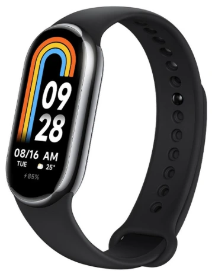

üõ°Ô∏è Recomendaciones reales desde 2020
⭐ Análisis imparciales por expertos
üîù‚Äã Lo probamos por ti para que elijas lo mejor
üõ°Ô∏è Recomendaciones reales desde 2020
⭐ Análisis imparciales por expertos
üîù‚Äã Lo probamos por ti para que elijas lo mejor

Contenido actualizado en junio de 2025
Soy David Jimenez, deportista y analista con más de 5 años de experiencia probando wearables y tecnología deportiva. En esta guía te mostraré las mejores pulseras de actividad de 2025, probadas en uso real: deporte, trabajo y descanso. Aquí solo encontrarás pulseras que realmente destacan por su precisión, comodidad y batería. Si estás buscando una smartband fiable para entrenar, controlar tu salud o simplemente estar más activo, esta comparativa es para ti.
Las pulseras de actividad, por norma general, no son dispositivos demasiado complejos: están pensadas para un uso limitado como contar pasos, monitorizar sueño o registrar entrenamientos básicos. Si lo que buscas es un dispositivo con GPS integrado, pagos móviles o funciones avanzadas tipo smartwatch, te recomiendo mejor una guía de compra de relojes inteligentes.
| Imagen | Modelo | Lo mejor | A tener en cuenta | Comprar |
|---|---|---|---|---|
| Xiaomi Smart Band 9 | Pantalla muy brillante y fluida, gran autonomía y funciones completas de salud en un diseño súper ligero. | No tiene GPS ni NFC, y para algunas funciones necesitas la app Mi Fitness. | Ver en Amazon | |
| Xiaomi Smart Band 9 Active | Comodísima para uso diario, con buena autonomía y funciones básicas de salud que cumplen bien. | No tiene pantalla AMOLED ni GPS; algunos datos de salud no son tan precisos como en gamas más altas. | Ver en Amazon | |
| Google Fitbit Inspire 3 | Buena precisión en los datos de salud y excelente para quienes priorizan el bienestar y el descanso. | No tiene GPS ni funciones deportivas avanzadas; algunas funciones requieren Fitbit Premium. | Ver en Amazon | |
|  | Xiaomi Smart Band 8 | Versátil y precisa, ideal si corres o haces deporte y te gusta monitorizar el rendimiento. | No incluye GPS; algunas funciones requieren app Mi Fitness. | Ver en Amazon |
| HUAWEI Band 8 | Elegante y muy completa. La mejor opción si quieres estilo sin renunciar a sensores fiables. | Sin GPS; algunas funciones avanzadas requieren app Huawei Health. | Ver en Amazon | |
| HUAWEI Band 10 | Diseño moderno, datos de salud precisos y batería muy duradera. Se siente como un smartwatch. | No tiene GPS ni NFC, y requiere app de Huawei para estadísticas detalladas. | Ver en Amazon | |
| Samsung Galaxy Fit3 | Pantalla grande y fluida, funciones de smartwatch y excelente batería para uso diario. | No tiene GPS ni NFC; requiere Samsung Health para seguimiento completo. | Ver en Amazon |
Lo mejor: Pantalla muy brillante y fluida, gran autonomía y funciones completas de salud en un diseño súper ligero.
A tener en cuenta: No tiene GPS ni NFC, y para algunas funciones necesitas la app Mi Fitness.
Lo mejor: Comodísima para uso diario, con buena autonomía y funciones básicas de salud que cumplen bien.
A tener en cuenta: No tiene pantalla AMOLED ni GPS; algunos datos de salud no son tan precisos como en gamas más altas.
Lo mejor: Buena precisión en los datos de salud y excelente para quienes priorizan el bienestar y el descanso.
A tener en cuenta: No tiene GPS ni funciones deportivas avanzadas; algunas funciones requieren Fitbit Premium.
Lo mejor: Versátil y precisa, ideal si corres o haces deporte y te gusta monitorizar el rendimiento.
A tener en cuenta: No incluye GPS; algunas funciones requieren app Mi Fitness.
Lo mejor: Elegante y muy completa. La mejor opción si quieres estilo sin renunciar a sensores fiables.
A tener en cuenta: Sin GPS; algunas funciones avanzadas requieren app Huawei Health.
Lo mejor: Diseño moderno, datos de salud precisos y batería muy duradera. Se siente como un smartwatch.
A tener en cuenta: No tiene GPS ni NFC, y requiere app de Huawei para estadísticas detalladas.
Lo mejor: Pantalla grande y fluida, funciones de smartwatch y excelente batería para uso diario.
A tener en cuenta: No tiene GPS ni NFC; requiere Samsung Health para seguimiento completo.
Una pulsera de actividad (o smartband) es un dispositivo ligero que llevas en la muñeca y que monitoriza tu actividad física, tu salud y a veces incluso tu sueño y niveles de estrés. A diferencia de los smartwatches, las pulseras son más discretas, ligeras y con baterías de larga duración.
üèÉ‚Äç‚ôÇÔ∏è Motivaci√≥n diaria: ver tus pasos, calor√≠as y objetivos ayuda a moverte más cada d√≠a.
ü©∫ Control de salud: monitoriza frecuencia card√≠aca, ox√≠geno en sangre, sue√±o y estr√©s sin esfuerzo.
üõå Compactas y c√≥modas: apenas notas que las llevas puestas, incluso durmiendo.
üîã Gran autonom√≠a: algunas duran hasta 2 semanas sin necesidad de cargar.
üì± Compatibilidad total: funcionan con apps como Mi Fitness, Huawei Health, Samsung Health o Fitbit.
⭐ Valoración del experto: 4.4/5
Probé la Xiaomi Smart Band 9 y me sorprendió lo ligera y completa que es. La pantalla AMOLED de 1,62″ se ve genial incluso bajo el sol, y todo fluye con su tasa de 60 Hz. Tiene seguimiento continuo de salud (pulso, SpO₂, estrés, sueño), más de 150 modos deportivos y una batería que me duró casi tres semanas. Ideal si buscas una pulsera potente, cómoda y sin complicaciones.
⭐ Valoración del experto: 4.3/5
Esta versión Active de la Smart Band 9 me ha parecido ideal si buscas una pulsera económica pero muy completa. Tiene una pantalla TFT de 1,47″ que se ve nítida, es muy ligera (solo 16,2 g) y la batería me ha aguantado unos 2 días con uso intenso, o más de 2 semanas en uso normal. Mantiene funciones clave como el seguimiento de sueño, pulso y SpO₂, y su diseño cómodo la hace perfecta para llevarla todo el día sin darte cuenta.
⭐ Valoración del experto: 4.2/5
La Inspire 3 me ha parecido una pulsera sencilla pero con datos de salud bastante precisos. Tiene un diseño fino y muy ligero, y lo que más me gustó fue su enfoque en el bienestar: estrés, sueño, frecuencia cardíaca y niveles de actividad. La batería me duró fácilmente más de una semana, y su pantalla AMOLED pequeña pero nítida permite ver lo esencial sin distracciones.
⭐ Valoración del experto: 4.4/5
La Mi Smart Band 8 me ha sorprendido por su versatilidad. No solo puedes llevarla en la muñeca, también incluye accesorios para usarla como clip en la zapatilla y registrar carrera de forma más precisa. La pantalla AMOLED de 1,62″ es muy brillante, y tiene sensores de salud completos. Lo mejor: la autonomía ronda las dos semanas incluso con notificaciones activas.
⭐ Valoración del experto: 4.6/5
La HUAWEI Band 8 tiene un diseño que parece de gama alta: delgada, ligera y con pantalla AMOLED de gran calidad. Me gustó su precisión al medir sueño, frecuencia cardíaca y saturación de oxígeno. Incluye funciones interesantes como ejercicios de respiración, y la autonomía supera los 10 días sin despeinarse.
⭐ Valoración del experto: 4.6/5
Probé la Band 10 y lo primero que destaca es su diseño rectangular ultrafino y pantalla AMOLED clara incluso en exteriores. Tiene más de 100 modos deportivos, medición de estrés, sueño y salud cardíaca bastante precisa. Y lo mejor: se carga al 100 % en solo 45 minutos.
⭐ Valoración del experto: 4.4/5
La Galaxy Fit3 es una de las pulseras más completas que he probado. Su pantalla AMOLED de 1,6″ es amplia y muy cómoda de usar. Incluye sensores de salud (pulso, estrés, sueño), más de 100 modos de ejercicio y una batería que aguanta hasta 13 días. Además, permite controlar llamadas y notificaciones fácilmente desde la muñeca.
Después de probar estas pulseras durante semanas en distintos contextos (entrenamiento, descanso, trabajo), aquí te dejo mis recomendaciones personales según el tipo de usuario que seas:
La Huawei Band 10 combina diseño elegante, pantalla AMOLED grande y sensores muy precisos. Es cómoda, se carga rápido y su batería dura hasta dos semanas. Me encantó para entrenar y descansar.
üèÉ‚Äç‚ôÇÔ∏è HUAWEI Band 10 en AmazonLa Smart Band 9 de Xiaomi tiene una pantalla espectacular y todos los sensores que necesitas. Es muy ligera, con buena bater√≠a, y suficiente para deporte, trabajo y sue√±o. Muy completa para su precio.
üèÉ‚Äç‚ôÇÔ∏è Xiaomi Smart Band 9 en AmazonSi solo buscas lo básico pero fiable, la Smart Band 9 Active cumple de sobra. Mide lo esencial, tiene buena autonom√≠a y cuesta mucho menos. Ideal para iniciarse.
üèÉ‚Äç‚ôÇÔ∏è Xiaomi Smart Band 9 en Amazon üèÉ‚Äç‚ôÇÔ∏è Xiaomi Smart Band 9 Active en AmazonLa HUAWEI Band 10 ofrece un dise√±o espectacular, pantalla AMOLED y sensores muy precisos. Es la más completa que he probado en 2025.
üèÉ‚Äç‚ôÇÔ∏è HUAWEI Band 10 en AmazonLa Xiaomi Smart Band 9 y la Samsung Galaxy Fit3 son ideales para hacer deporte con datos fiables y pantallas n√≠tidas.
üèÉ‚Äç‚ôÇÔ∏è Xiaomi Smart Band 9 en Amazon üèÉ‚Äç‚ôÇÔ∏è Samsung Galaxy Fit3 en AmazonLa Xiaomi Smart Band 9 Active ofrece muchas funciones por muy poco dinero. Ideal si buscas algo sencillo pero útil.
üèÉ‚Äç‚ôÇÔ∏è Xiaomi Smart Band 9 en Amazon üèÉ‚Äç‚ôÇÔ∏è Xiaomi Smart Band 9 Active en AmazonLas Fitbit y Huawei destacan por su precisi√≥n en el sue√±o. En esta comparativa, la Google Fitbit Inspire 3 fue la más detallada.
üèÉ‚Äç‚ôÇÔ∏è Google Fitbit Inspire 3 en AmazonLa Xiaomi Smart Band 9 aguanta hasta 21 d√≠as. Tambi√©n destacan la HUAWEI Band 8 y HUAWEI Band 10 con 14 d√≠as de autonom√≠a.
üèÉ‚Äç‚ôÇÔ∏è Xiaomi Smart Band 9 en Amazon üèÉ‚Äç‚ôÇÔ∏è HUAWEI Band 8 en Amazon üèÉ‚Äç‚ôÇÔ∏è HUAWEI Band 10 en AmazonTodas son unisex, pero por dise√±o y ligereza, la HUAWEI Band 8 y la Xiaomi Smart Band 8 son perfectas para mu√±ecas peque√±as.
üèÉ‚Äç‚ôÇÔ∏è Xiaomi Smart Band 8 en Amazon üèÉ‚Äç‚ôÇÔ∏è HUAWEI Band 8 en AmazonTodas las de esta comparativa lo son. Solo necesitas la app correspondiente (Mi Fitness, Fitbit, Samsung Health‚Ķ).
Sí, casi todas tienen resistencia 5 ATM. Aun así, evita ducharte con agua caliente o sumergirlas durante mucho tiempo.
La pulsera es más compacta y ligera, pero con funciones limitadas. El reloj ofrece más apps y conectividad, pero es más caro.
Tanto la Google Fitbit Inspire 3 como la HUAWEI Band 10 y las Xiaomi tienen sensor de estrés y ejercicios de respiración integrados.
üèÉ‚Äç‚ôÇÔ∏è Google Fitbit Inspire 3 en Amazon üèÉ‚Äç‚ôÇÔ∏è HUAWEI Band 10 en Amazon